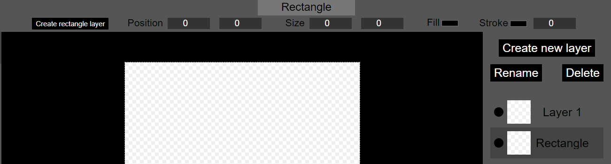
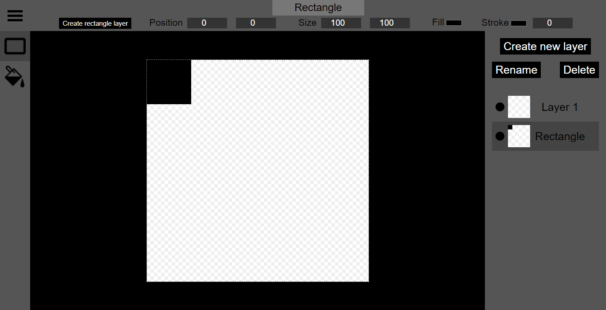
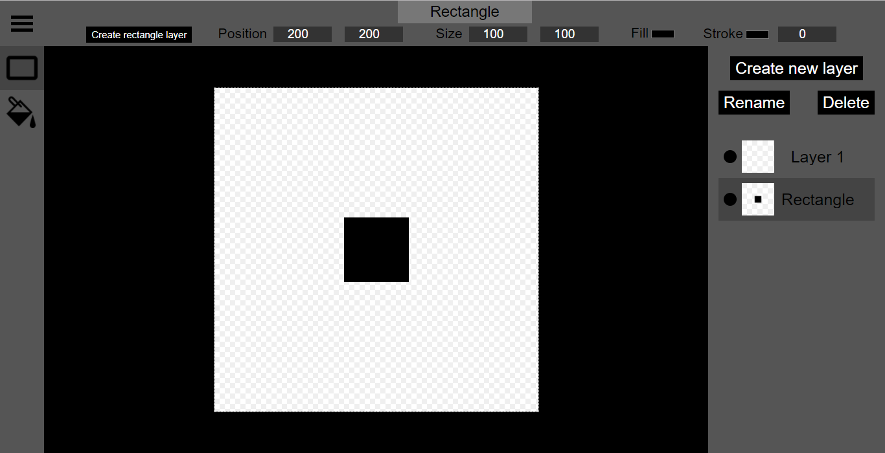
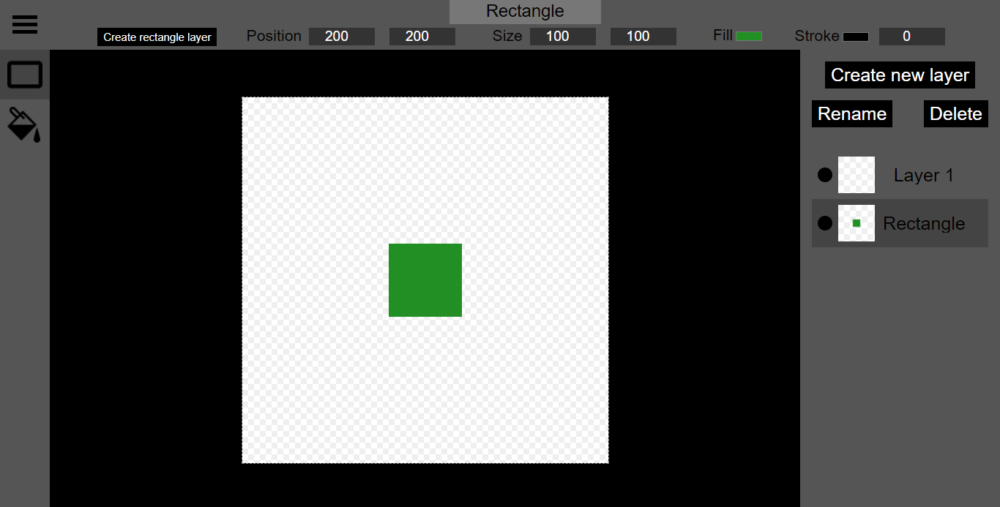
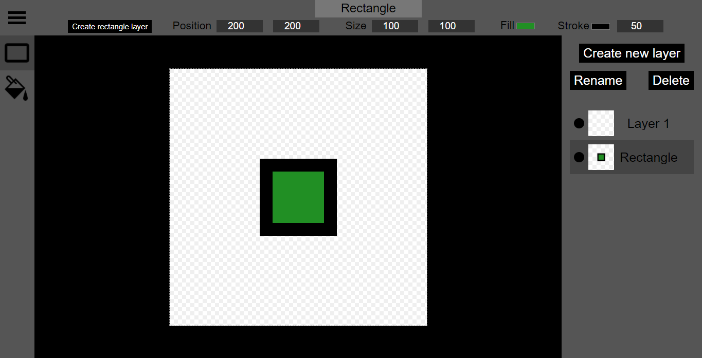
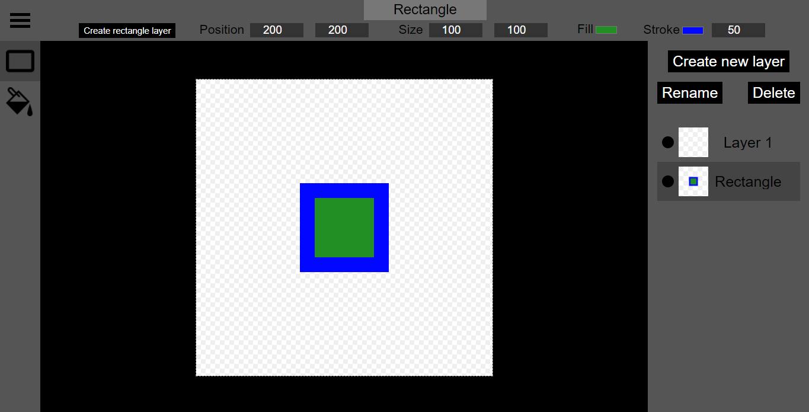

In this walkthrough, we will use the rectangle tool to create and modify rectangles. Click the rectangle icon in the toolbar to select the rectangle tool.
To begin with, the inputs presented by the rectangle tool are greyed out and disabled. The rectangle tool only becomes enabled when the selected layer is a rectangle layer. Rectangle layers are created using the create rectangle layer button. Use the create rectangle layer button to create a rectangle layer.
Now that the selected layer is a rectangle layer, the inputs for the rectangle tool have become enabled, including inputs for the rectangle's position, size, fill (background), and stroke (border).
Next to Size are two input fields. The X input sets the horizontal length of the rectangle, while the Y input sets the vertical length. These values must be positive whole numbers. Type a number into both inputs to give the rectangle a size. In this example, the rectangle will be 100 pixels by 100 pixels.
Our rectangle has now appeared on the canvas, but it is stuck in the top-left corner. The position inputs can be used to set the x and y-coordinates of the top-left corner of the rectangle on the canvas. These values must also be positive whole numbers. In this example, we will set both values to 200 pixels.
Now we will set the fill (background) colour of the rectangle. Next to fill is a button for opening a colour selector (provided by the browser) that can be used to select a fill colour for the rectangle. In this example, we will set the fill colour of the rectangle to a shade of green.
We can also set a stroke (border) for the rectangle. The stroke is additional to the size of the rectangle we have already set. The width text input next to stroke can be used to set the width of the rectangle's stroke. This value must also be a positive whole number. In this example, we wil set the stroke width to 50 pixels.
The stroke defaults to black. We can set the colour of the stroke using the colour selector to the left of the field we just typed into. In this example, we wil set the stroke colour to a shade of blue.
